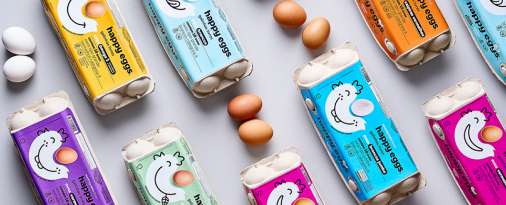
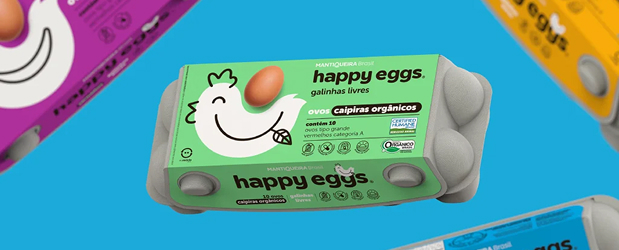
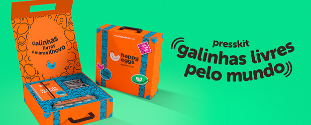

Como o branding transformou ovos em ouro: O caso da aquisição da Mantiqueira pela JBS
Imagine-se caminhando pela Quinta Avenida em Nova York, pela Avenue Montaigne em Paris ou pela Via Monte Napoleone em Milão. Entre as vitrines exibindo bolsas de R$20 mil e sapatos que custam o preço de um carro popular, algo novo começou a aparecer nos últimos anos: cafeterias elegantes e confeitarias requintadas ostentando os mesmos logotipos das grifes ao lado.
Não, seus olhos não estão te enganando. Louis Vuitton, Dior, Gucci, Ralph Lauren e dezenas de outras marcas de luxo estão, de fato, servindo cappuccinos e bolinhos elaborados junto com suas coleções sazonais. E não se trata apenas de uma tendência passageira – é uma estratégia de negócios cuidadosamente calculada que está redefinindo o que significa ser uma marca de luxo em 2025.
Mas o que explica essa súbita paixão das grifes pelo mundo gastronômico? Por que marcas que construíram impérios vendendo moda e acessórios estão agora investindo milhões em experiências culinárias?
A alquimia do branding: transformando commodities em produtos premium
Quando pensamos em produtos com forte apelo de marca, ovos raramente vêm à mente. Afinal, o que poderia ser mais básico, mais commodity do que um simples ovo? No entanto, a recente aquisição de 50% da Granja Mantiqueira pela gigante do setor de proteínas JBS, por aproximadamente meio bilhão de reais, conta uma história fascinante sobre o poder do branding para transformar até mesmo os produtos mais básicos em ativos valiosos.
Como a maior produtora de ovos da América Latina conseguiu uma avaliação tão expressiva? A resposta está na alquimia do branding estratégico.

De commodity a produto de desejo
Há alguns anos, comprar ovos era uma decisão simples baseada quase exclusivamente no preço. Os consumidores raramente perguntavam sobre a origem dos ovos, as condições das galinhas ou se preocupavam com a marca estampada na caixa.
A Mantiqueira mudou esse jogo completamente.
Com marcas como Happy Eggs e Fazenda da Toca, a empresa não apenas vende ovos – vende uma narrativa completa sobre bem-estar animal, sustentabilidade e qualidade superior. Suas embalagens coloridas e distintivas se destacam nas gôndolas dos supermercados, transmitindo valores que ressoam profundamente com o consumidor contemporâneo.
O que a JBS realmente comprou por meio bilhão
1. Uma Marca com Propósito Claro
A Mantiqueira construiu uma identidade de marca fundamentada em valores como sustentabilidade, bem-estar animal e qualidade premium. Em um mundo onde consumidores cada vez mais compram baseados em valores compartilhados, isso representa um ativo inestimável.
2. Capacidade de Praticar Preços Premium
Através de seu trabalho consistente de branding, a Mantiqueira conseguiu algo extraordinário: fazer consumidores pagarem significativamente mais por um produto que, em sua essência, é uma commodity. Suas linhas premium podem custar até três vezes mais que ovos convencionais – uma demonstração clara do poder do branding para criar valor percebido.
3. A Proteína que Faltava (com Valor Agregado)
Como destacado pelo Brazil Journal, o ovo era “a proteína que faltava” no portfólio da JBS. Mas não se trata apenas de preencher uma lacuna – trata-se de fazê-lo com uma marca que já conquistou o coração e a mente dos consumidores.

O caso Mantiqueira oferece lições valiosas para empresas de qualquer setor:
Nenhum produto é commodity por natureza
O exemplo da Mantiqueira prova que qualquer produto, mesmo o mais básico, pode escapar da armadilha da commodity através de branding. A diferenciação não precisa vir apenas do produto em si, mas da história que o cerca, dos valores que representa e da experiência que proporciona.
Submarcas como estratégia de segmentação
A criação de linhas como Happy Eggs permitiu à Mantiqueira atingir diferentes segmentos de mercado com propostas de valor distintas, maximizando seu alcance sem diluir seu posicionamento principal.
Sustentabilidade como driver de valor
O posicionamento em torno de práticas sustentáveis e bem-estar animal não é apenas “marketing verde” – é um diferencial competitivo que se traduz diretamente em valor de negócio. A JBS, que tem enfrentado desafios de imagem relacionados a questões ambientais, certamente vê valor estratégico em associar-se a uma marca com credenciais de sustentabilidade.
Consistência constrói valor no longo prazo
O trabalho de branding da Mantiqueira não aconteceu da noite para o dia. Foi resultado de investimento consistente em comunicação, embalagem, experiência do consumidor e, claro, na entrega da promessa de marca através de produtos de qualidade.
O futuro: quando gigantes adotam marcas de nicho
A aquisição da Mantiqueira pela JBS levanta questões interessantes sobre o futuro da marca. Como a gigante do setor de proteínas administrará este ativo valioso?
“O desafio para a JBS será manter a autenticidade e os valores que tornaram a Mantiqueira tão especial, enquanto aproveita sua escala e recursos para expandir o alcance da marca”, pondera Carlos Martins, especialista em fusões e aquisições no setor alimentício.
Historicamente, quando grandes corporações adquirem marcas de nicho bem-sucedidas, o resultado pode variar drasticamente. Em alguns casos, a escala e os recursos do comprador potencializam o crescimento da marca adquirida sem comprometer sua essência. Em outros, a pressão por resultados de curto prazo e a integração forçada podem diluir justamente o que tornava a marca especial.
Conclusão: O ovo de ouro do branding
A aquisição da Mantiqueira pela JBS é um caso emblemático do poder do branding para criar valor tangível e mensurável. Quando bem executado, o branding não é despesa – é investimento com retorno quantificável.
Para empreendedores e gestores de marcas, a lição é clara: não importa quão básico ou commoditizado seja seu produto ou serviço, sempre existe espaço para diferenciação através de branding estratégico. E essa diferenciação pode, literalmente, valer meio bilhão.
Da próxima vez que você passar pelo corredor de ovos no supermercado e notar a diferença de preço entre um ovo comum e um ovo premium da Mantiqueira, lembre-se: você não está apenas observando diferentes tipos de ovos – está testemunhando o poder transformador do branding em ação.
E para a JBS, o desafio agora é não matar a galinha dos ovos de ouro.